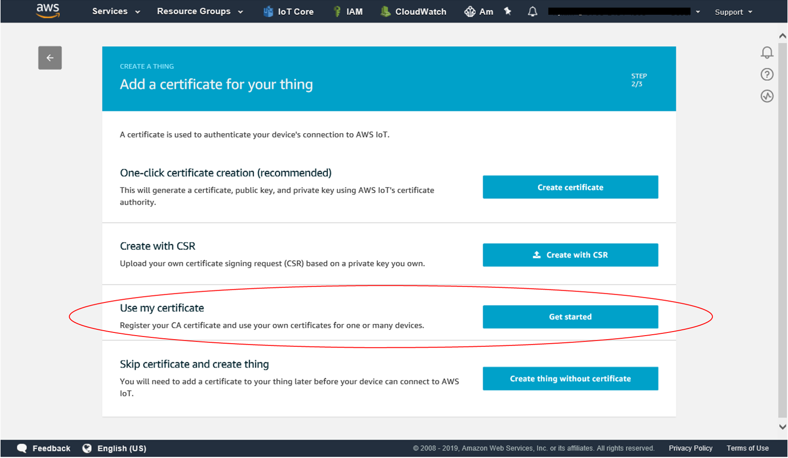
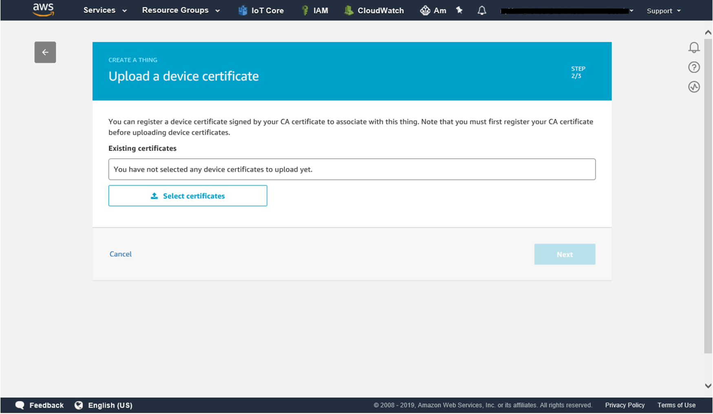
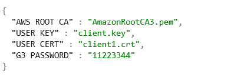

Getting Started with ZWG3M
Provisioning the certificate to G3 device
ZWG3M includes G3 device, an ICTK's PUF based-security chip that performs authentication and cryptography operations. It is suited for performing secure authentication, protecting firmware , preventing counterfeiting and storing secure data. This guide will provide writing certificates and keys to G3 via ZWG3M board so that the customer can write their personal certificate to connect AWS IoT.
Certificate Requirements
Cryptographic algorithm: ECC(ECDSA and ECDJ) with secp256r1(NIST P245)
- ECC curve name : prime256v1
- Private key file extension : *.key
- Certificate file extension : *.crt
Use my certificate for AWS IoT Core:
- Log in to the AWS Management
Console
- Choose
 IoT Core
service
IoT Core
service
- In the left navigation panel, click on Manage/Things

- Click on create button and add your device to the thing registery
- On the Certificate page, choose Use my certificate.

- Select or register CA for your own certificate to register.

- Upload a device certificate : the one installed in ZWG3M

Write your certificate to ZWG3M:
g3 password will be set differently with client’s request. Unless defined, it is set to default value : 11223344 . Please contact puf@ictk.com for derail information.
- Download test example script from the ICTK GitHub repository Python script(py)
- G3 supports ECC but not RSA . please use ECC 245 bit key for Amazon Trust Services
Endpoints.
- RootCA : AmazonRootCA
certificate
- Insert AmazonRootCA certificate, client key and client certificate on your python script
folder.
- We have provided python code that writes certificate and key to G3 device.
- Please modify the certi.json file accordingly.
AWS ROOT CA : amazon root certificate
USER KEY : your own private key
USER CERT : your certificate
G3 PASSWORD : password provided from vendor

- Run script : zwg3m_certi.py
Available port will be shown in windows. Once user selects the port for the ZWG3M, it will be stored in json file name 'zwg3m.json'
- Writing process
*please disable Wi-Fi connection prior to below process. Any interruption may cause false input to G3 chip.

Writing process may take a minutes and it will be shown as above. Please reset the ZWG3M board after above process. - Writing process